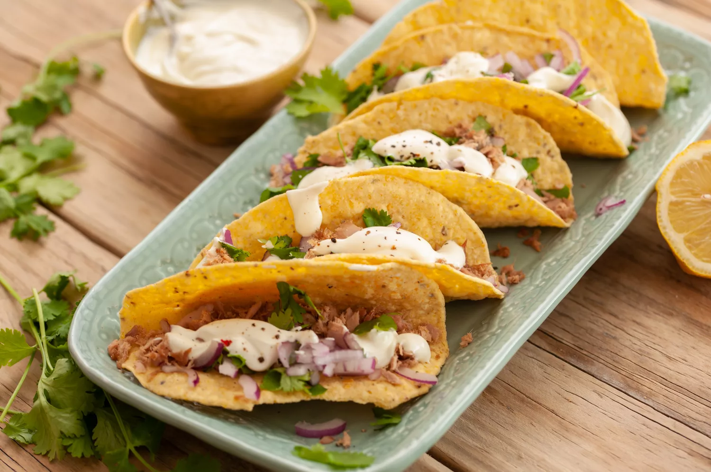

How to make Tuna Tacos

This is a simple and easy recipe for any tuna lovers out there. They are have the perfect amount of tang and zest to make your average can of tuna worth so much more!
Ingredients
- 2 tablespoons mayonnaise
- 2 tablespoons sour cream
- 2 tablespoons cream
- 1 teaspoon fresh lemon juice(or lime juice)
- 1/4 cup chopped onion
- 1/4 cup cilantro, chopped
- 1 teaspoon vegetable oil
- 1 (8 ounce) can tuna, well drained
- 4 hard or soft corn tortillas
Directions/Prep
- Whisk together the mayonnaise, sour cream, cream, and lemon or lime juice
- In a separate bowl, stir together the onions and cilantro. Set this garnish and the cream sauce aside for the moment.
- Heat oil in small pan and saute the tuna, stirring often, until the tuna is heated through and very slightly browned. Take the pan off the heat.
- If using soft tortillas, heat the griddle/pan over a high heat and place them on it. Heat the tortillas, turning once or twice in the process, until they are very hot. For hard tacos shells place them on a baking sheet and heat until crispy.
- Place 1/4 of the tuna mixture onto each tortilla, then top each with some of the onion-cilantro mix and drizzle of cream sauce
- Serve tacos immediately. Add bottled hot sauce or other condiments of choice if wanted. Enjoy!